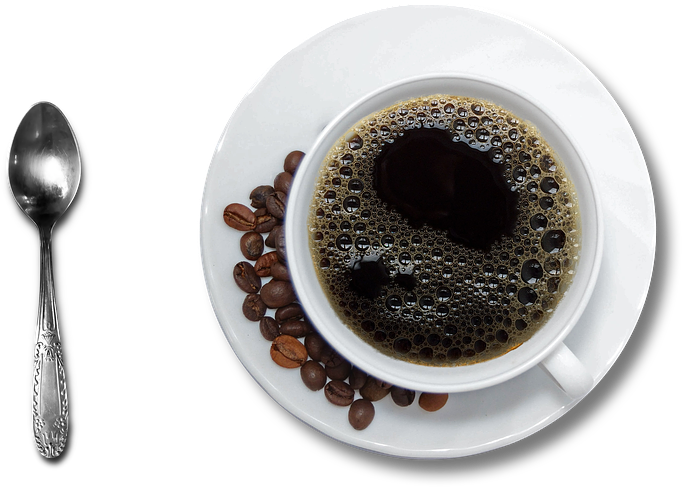
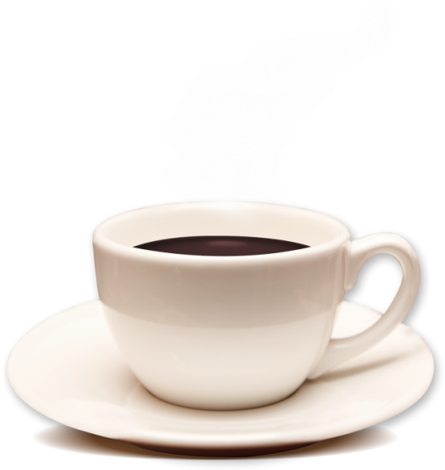

Introdusă în anii 1500, cafeaua și-a dezvoltat propria cultură în Italia. Ziua este definită prin ritualuri de cafea: un cappuccino este servit la micul dejun, un caffè macchiato - sau două - după-amiază și espresso după cină. Și ca orice cultură, și cea a cafelei italiene vine cu legi aparent misterioase. Comandați un latte și veți primi un pahar de lapte (care reprezintă exact ceea ce ați comandat) sau dacă comandați un cappucino după ora 11 a.m sau o cafea la pachet să nu fiți uimiți dacă veți fi întrebat într-un mod amuzat dacă sunteți turist. Și în privința cafelei se resimt diferențele regionale. În nordul țării se remarcă preferința pentru „corretto” (cafea cu adaos de lichior) sau cafea turcească, iar în sud se evidențiază cafeaua foarte puternică, servită în căni minuscule, cu un cub de zahăr „Ristretto”.
 